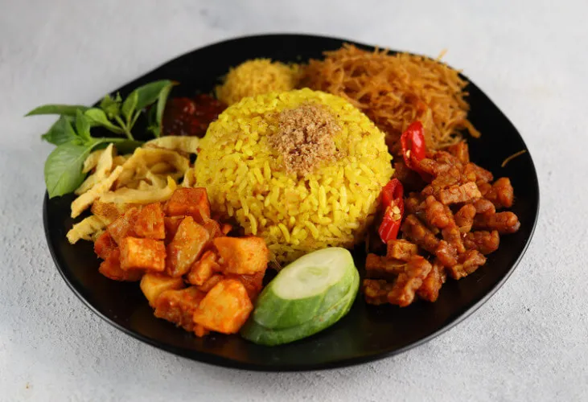

NASI KUNING
Nasi kuning adalah sebuah hidangan nasi berwarna kuning tradisional dalam masakan-masakan Spanyol, Kuba, Peru, Karibia, Filipina, Afganistan, Sri Lanka, Afrika Selatan dan Indonesia. Makanan tersebut berbahan dasar nasi putih, yang dicampur dengan annatto, saffron atau kunyit yang dipakai untuk memberikan warna kuning.
KARI AYAM
.Kari ayam adalah hidangan umum di Asia Selatan, Asia Tenggara, serta di Caribbean (di mana makanan tersebut biasa disebut sebagai "ayam kari")

SOTO>
Soto (juga dikenal dengan beberapa nama lokal seperti, sroto, sauto, tauto, atau coto) adalah makanan khas Indonesia seperti sop yang terbuat dari kaldu daging dan sayuran.